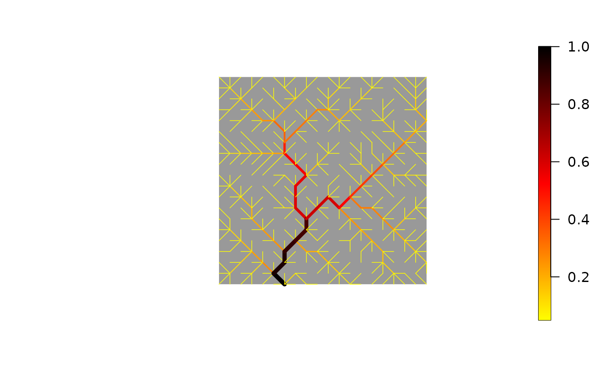

River geometry of an Optimal Channel Network
rivergeometry_OCN.RdFunction that calculates river width, depth and water velocity by applying Leopold's scaling relationships to nodes at the RN and AG levels.
Usage
rivergeometry_OCN(OCN, widthMax = 1, depthMax = 1,
velocityMax = 1, expWidth = NaN, expDepth = NaN,
expVelocity = NaN)Arguments
- OCN
A
riverobject as produced byaggregate_OCN.- widthMax
Maximum river width allowed. If
nOutlet = 1, it corresponds to the width at the outlet node.- depthMax
Maximum river depth allowed. If
nOutlet = 1, it corresponds to the depth at the outlet node.- velocityMax
Maximum water velocity allowed. If
nOutlet = 1, it corresponds to the water velocity at the outlet node.- expWidth, expDepth, expVelocity
Exponents for the power law relationship between river width, depth, water velocity and contributing area. If none of
expWidth,expDepth,expVelocityis specified by the user, the valuesexpWidth = 0.5,expDepth = 0.4,expDepth = 0.1proposed by Leopold and Maddock [1953] are used. It is possible to specify two out of these three exponents, provided that each of them lies in the range (0; 1) and their sum is lower than one. In this case, the missing exponent is calculated as the complement to one of the sum of the two values provided. If all three exponents are specified by the user, their sum must be equal to one.
Value
AA river object that contains all objects contained in OCN, in addition to the objects listed below.
RN$widthVector (of length
OCN$RN$nNodes) of river width values for every RN node.RN$depthVector (of length
OCN$RN$nNodes) of river depth values for every RN node.RN$velocityVector (of length
OCN$RN$nNodes) of water velocity values for every RN node.AG$widthVector (of length
OCN$AG$nNodes) of river width values for every AG node.AG$depthVector (of length
OCN$AG$nNodes) of river depth values for every AG node.AG$velocityVector (of length
OCN$AG$nNodes) of water velocity values for every AG node.
Finally, widthMax, depthMax, velocityMax, expWidth, expDepth, expVelocity are added to the list.
Details
The values of contributing area used to evaluate river geometry at the AG level are equal to 0.5*(OCN$AG$A + OCN$AG$AReach). See also aggregate_OCN.
See also Leopold, L. B., & Maddock, T. (1953). The hydraulic geometry of stream channels and some physiographic implications (Vol. 252). US Government Printing Office.
Examples
# 1) Compute river geometry of a 20x20 OCN with default options
# and display river width at the RN level
OCN <- rivergeometry_OCN(aggregate_OCN(landscape_OCN(OCN_20)))
draw_thematic_OCN(OCN$RN$width,OCN)
